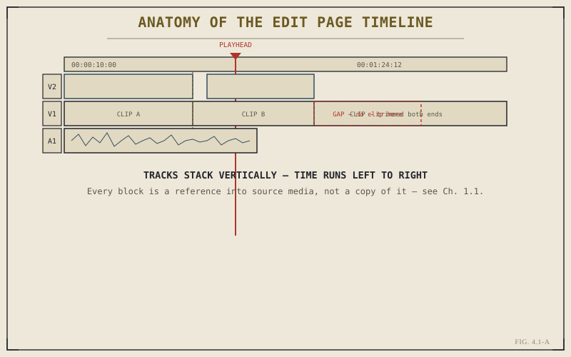

Part III showed the timeline through the Cut page's speed-optimized lens. Part IV starts over, deliberately, on the Edit page — the full, unabbreviated version of the same underlying object Chapter 1.1 described as a list of instructions pointing into source media. This chapter is a labeled tour of that timeline's actual anatomy, giving you the vocabulary the rest of Part IV, and much of the book after it, will build on without re-explaining.
The Playhead and the Timecode Ruler
Running along the top of the timeline is the timecode ruler — a horizontal measure of time, not distance, even though it's displayed as horizontal space. The playhead is the vertical line marking your current position within that time, and it's the single most important reference point on the entire page: whatever the playhead is sitting on is what the Timeline viewer, introduced back in Chapter 1.5, is actually showing you. Nearly every action you take on the Edit page — trimming, marking, navigating — is defined relative to wherever the playhead currently sits.

The full vocabulary of the timeline — worth knowing by sight before the tools that operate on it.
Tracks: Vertical Lanes, Stacked by Convention
Below the ruler, tracks run as horizontal lanes stacked vertically — video tracks above, audio tracks below, by convention rather than strict requirement. Each track can hold any number of clips in sequence, and a timeline can have as many tracks as a project actually needs, though Chapter 4.2 covers what stacking additional video and audio tracks actually means in practice, since the two behave quite differently from each other.
Clips, Gaps, and Edit Points
A clip on the timeline appears as a labeled block, often showing a thumbnail or waveform preview, sized proportionally to its duration at the timeline's current zoom level. Where one clip ends and the next begins is an edit point — the exact boundary Chapter 3.4 discussed trimming on the Cut page, now with the Edit page's fuller toolset available for adjusting it, which Part V covers at length. A gap is simply the absence of a clip on a track for some stretch of time — not an error, just empty space, sometimes intentional (a deliberate pause) and sometimes accidental (a clip removed without anything filling the space it left behind).
A gap isn't a mistake by default. It only becomes one when it's there by accident rather than by intention — and telling the two apart is a habit worth building early, since an unintended gap is one of the most common small errors that slips into a finished cut unnoticed.
Zoom: A Manual Control, Not an Automatic One
Chapter 3.4 made a point of how the Cut page automatically manages zoom level for you, centering a trim view without any manual adjustment. The Edit page's single timeline doesn't do this — zoom level here is a setting you control directly, typically with a slider, keyboard shortcuts, or scroll gestures, letting you move between a wide overview of an entire sequence and a tight, frame-level view for precise work. This is a direct trade-off consistent with everything Chapter 3.1 said about the two pages: the Cut page automates zoom in exchange for speed; the Edit page hands you manual control in exchange for the flexibility that control provides once a sequence needs it.
One Project, Potentially Many Timelines
It's worth clarifying something implicit so far: "the timeline" isn't necessarily singular within a project. A single Resolve project, as Chapter 2.1 described it, can contain multiple separate timelines — alternate cuts, different delivery versions, or entirely different sequences living inside the same Media Pool. Each one is its own independent timeline object, viewable and editable on its own, and Chapter 4.7's discussion of nested timelines later in this part builds directly on the fact that a timeline is itself just another kind of object your project can contain and organize, much like the bins from Chapter 2.2.
With this vocabulary in place, Chapter 4.2 goes deeper into one specific piece of it — tracks — and specifically into why video tracks and audio tracks, despite looking similar as stacked lanes, behave according to genuinely different rules once you actually start layering clips on them.
Key Concepts to Remember
- The playhead's position drives nearly everything else on the Edit page — always know where it is before acting.
- A gap is empty space on a track, not an error by default — the important thing is knowing whether it's there intentionally.
- Unlike the Cut page's automatic zoom, the Edit page's timeline zoom is a manual control — the trade-off for its greater flexibility.
- A project can hold multiple independent timelines, and a timeline is itself an object your project organizes, just like a bin.
Cross-References Forward
| → Ch. 4.2 | Explains why video tracks stack visually while audio tracks sum together instead. |
| → Ch. 4.7 | Builds on a project holding multiple timelines to explain nesting one timeline inside another. |
| → Ch. 5.1 | Trimming & Precision Editing — the full toolset for adjusting edit points introduced here. |